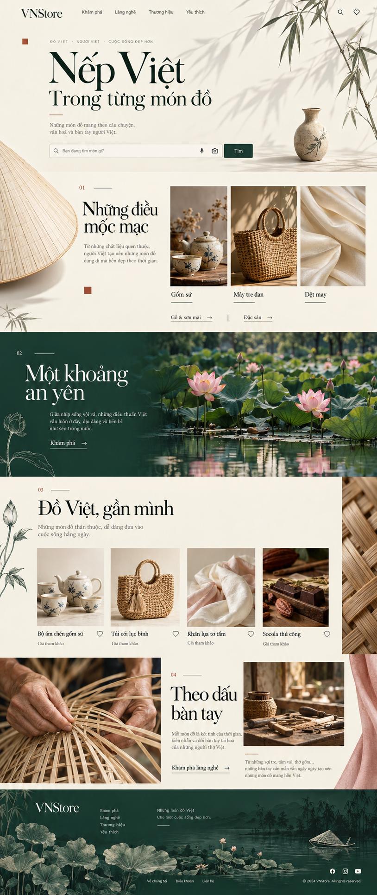
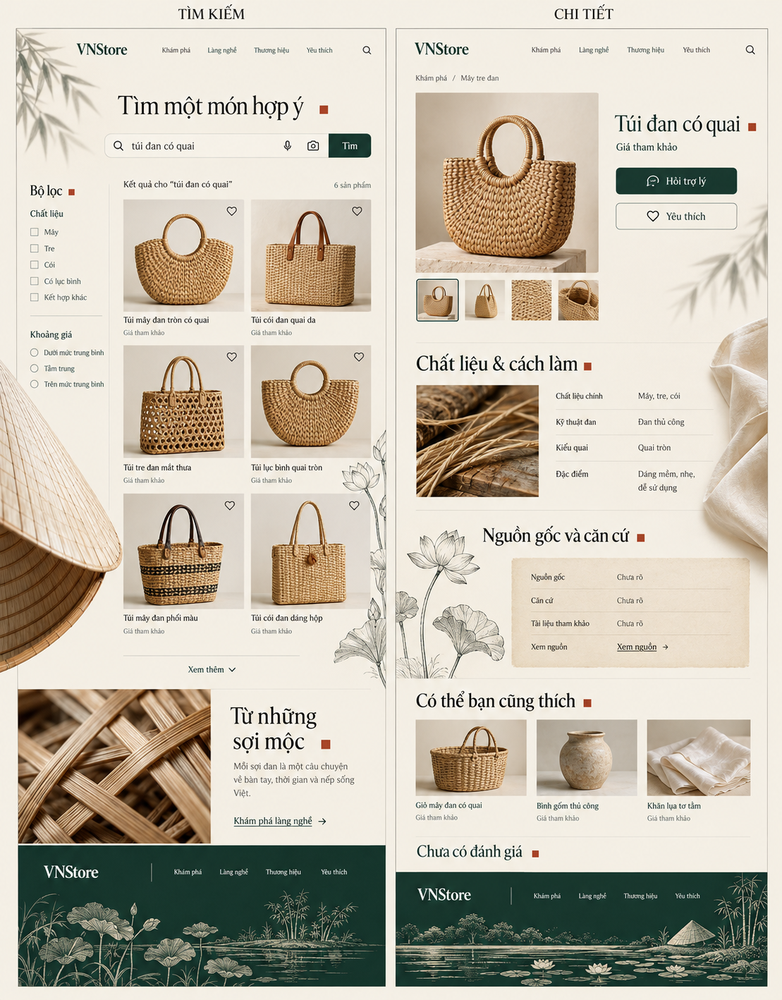
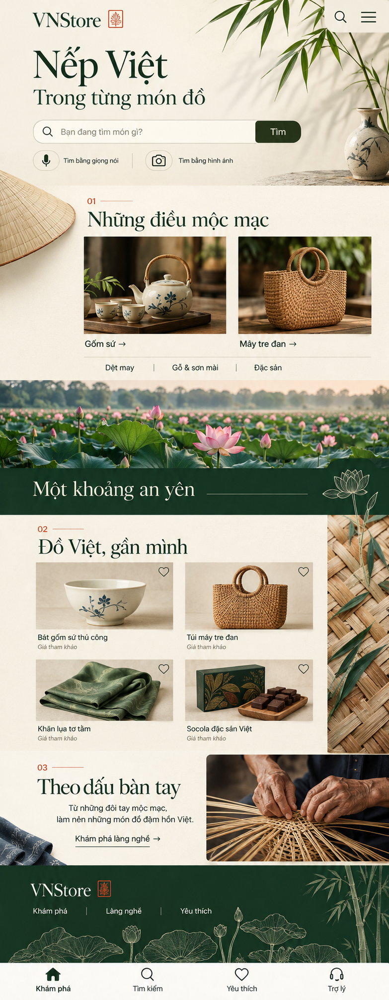

Bóng tre
Ánh sáng chéo và một nhánh ở lề. Chữ lớn, search và vùng đọc đứng yên.
Bóng tre mở trang. Nón lá gợi một nhịp cong ở phần khám phá. Đầm sen nằm giữa hành trình. Sợi đan, bàn tay và nét mực tiếp nối xuống chân trang. Phiên bản 2 phân bố hình ảnh Việt qua toàn bộ bố cục, với khoảng lặng giữa các điểm nhấn.
Nhấp ảnh để xem nguyên bản. Các ảnh dài cho thấy cách đổi tỷ lệ, khoảng trống, chất liệu và màu sắc qua từng đoạn.



Ánh sáng chéo và một nhánh ở lề. Chữ lớn, search và vùng đọc đứng yên.
Cắt cúp một phần ở mép chương danh mục. Ảnh và chữ vẫn theo lưới.
Cảnh rộng ở giữa hành trình. Chữ sáng trên mảng xanh đặc, không đè mặt nước.
Macro ở ngoài lưới; sản phẩm thật và caption có đủ khoảng trắng.
Ảnh nghề lệch cỡ, chú thích rõ; một mép vải khép góc trống.
Sen tiền cảnh và tre phía xa tạo đoạn kết. Liên kết ở vùng nền đặc.
Khoảng cách hình đặc với chữ: tối thiểu 32px desktop, 20px mobile. Đồ họa neo theo chương, không bám cố định màn hình và không phủ lên input, giá hay nguồn gốc.
Lá nghiêng ±1,2° trong 4 giây, trở về gốc rồi đứng yên. Dành cho một góc hero; nội dung và ảnh không lắc theo.
Vòng nước lan trong 480ms. Nút phản hồi ngay, không chờ gợn tan mới thực hiện tác vụ.
Thẻ mới đi lên 8px trong 240ms, lệch nhau 24ms. Chỉ chạy nhóm đầu; giữ thứ tự đọc và bố cục.
Cánh sen mở 6°, panel tiến 12px. Một dấu hiệu chào đón nhỏ, không gõ chữ giả hoặc kéo dài thời gian chờ.
Các mẫu này kiểm tra tương tác nhỏ, chưa mô phỏng chuyển cảnh của toàn bộ sáu chương. Chỉ chạy khi bạn bấm. Tùy chọn của hệ điều hành luôn được ưu tiên; khi giảm chuyển động, trạng thái vẫn thay đổi đầy đủ. Rời tab sẽ dừng các hiệu ứng.